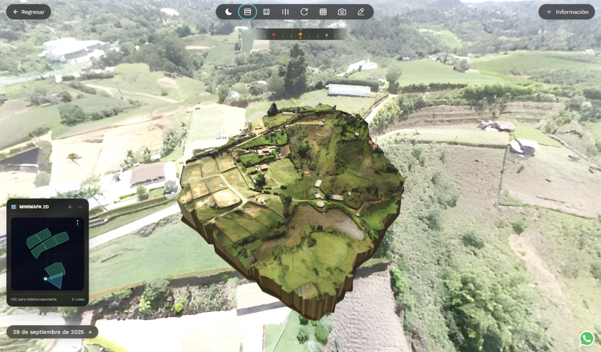
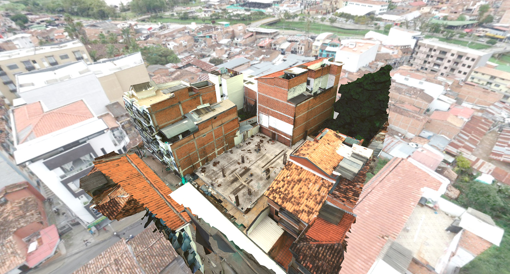
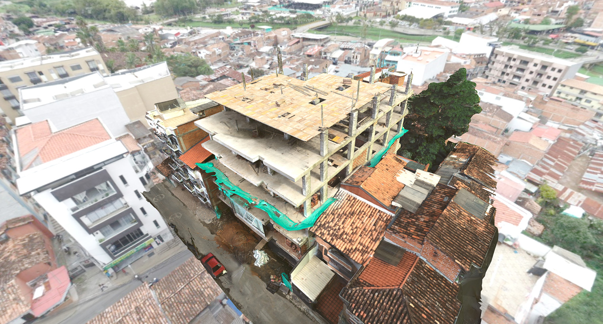

Deja de vender terrenos con
fotos planas y videos pasivos
Permite que tus compradores caminen el lote en 3D desde su celular, calculen el área en m² sobre el relieve real y te contacten por WhatsApp listos para comprar.
¿Por qué se pierden ventas y se retrasan obras?
Inmobiliarias & Parcelaciones
Las fotos y videos aéreos tradicionales son planos y pasivos. No transmiten la inclinación de la ladera, la verdadera vista ni los linderos reales.
Ingeniería, Obras & Topografía
Se entregan nubes de puntos y ortomosaicos de 3 a 5 Gigas que clientes, comités e interventores no pueden abrir en sus computadores de oficina.
¿Qué es MyView exactamente?
No somos fotógrafos tradicionales ni un software genérico extranjero: somos la primera plataforma de Modelos 3D Interactivos Web ultraligeros creada en Antioquia.

🌐 100% Web & Móvil
Un enlace que se comparte por WhatsApp. El comprador o interventor lo abre en Safari o Chrome con un toque y navega la montaña en 3D.
⚡ Optimización Rápida y Liviana
Reduce el peso del archivo para que no gaste datos. Carga en 0.3 segundos sin congelar teléfonos en carreteras con señal 4G estándar.
🎯 Enfoque Dual
Acelera las ventas de parcelaciones campestres y al mismo tiempo certifica avances de obra para constructoras e interventorías.
¿Qué Hacemos? De la Tierra a la Pantalla
Nosotros nos encargamos de todo el proceso técnico para que el cliente solo disfrute del resultado.
Vuelo en Campo
Desplazamiento a cualquier municipio de Antioquia con drones de precisión y fotogrametría georreferenciada.
Procesamiento GPU
Reconstrucción tridimensional de la malla y compresión avanzada KTX2 para habilitar carga instantánea web.
Configuración 3D
Delimitación de lotes, cálculo de m², estado comercial (*Disponible/Vendido*), brújula solar y botón WhatsApp.
Entrega del Enlace
Link interactivo listo para compartir por WhatsApp, insertar en el portal web o proyectar en sala de ventas.
Herramientas Diseñadas para Vender
Cálculo de Áreas en m² en Vivo
El usuario toca vértices sobre el relieve del terreno y el sistema calcula en tiempo real el área poligonal en metros cuadrados y el perímetro.
Brújula 3D & Minimapa Solar
Ubicación espacial para evaluar asoleamiento (amanecer y atardecer), dirección de brisas dominantes y vías de acceso vehicular.
Captación de Leads a WhatsApp
Botón flotante y modal que captura los datos del prospecto y timbra directo al WhatsApp del asesor indicando el lote exacto de interés.
Panorámicas Aéreas 360°
Puntos de observación esféricos combinados para contextualizar el entorno: vista a la represa en Guatapé, cordillera en Llanogrande o valles.
Seguimiento de Obra: Antes y Después
Compara fases constructivas y movimientos de tierra con nuestro comparador Antes / Después.


🚜 Control de Movimiento de Tierras
Auditoría volumétrica visual de cortes y rellenos para certificar horas de maquinaria.
🏦 Auditorías Bancarias Remotas
Sustentación gráfica de hitos constructivos ante entidades financieras y fiduciarias.
📉 -40% Visitas al Terreno
Ingenieros, arquitectos e interventores alineados sobre el mismo Modelo 3D.
Nuestros Dos Nichos Clave en Antioquia
Parcelaciones & Inmobiliarias
Llanogrande, Rionegro, La Ceja, Guatapé, El Retiro, Santa Fe de Antioquia.
Topografía, Obras & Constructoras
Constructoras civiles, consultoras viales y despachos topográficos.
Sectores de Expansión de Alto Valor
Verticales donde la topografía y visualización 3D generan altos retornos de inversión.
Glampings & Hoteles
Reserva inmersiva de cabañas: el turista escoge su estadía según la vista 360° y privacidad del terreno.
Agroindustria & Fincas
Zonificación de cultivos (aguacate Hass, café, flores), control de curvas de nivel, drenajes y lotes forestales.
Minería & Canteras
Cubicación periódica de acopios de material, control de taludes de seguridad y reportes ambientales.
Energía Solar & Redes
Estudios de asoleamiento con brújula 3D, pendientes óptimas para paneles solares y trazado vial.
Resultados Comprobados en Antioquia
Proyecto Laurum
"La reconstrucción 3D periódica nos permitió documentar y auditar cada fase de la edificación en el tiempo, reduciendo los tiempos de comité de obra en un 40%."
Proyecto La Aldana
"Levantamiento fotogramétrico de alta precisión y Modelo 3D georreferenciado con curvas de nivel exportadas directamente a Civil 3D sin reprocesos."
¿Cómo Funciona el Servicio?
Un esquema simple y accesible diseñado para acompañar el ritmo de venta o avance de tu proyecto.
Levantamiento y Montaje 3D
Servicio único por cada lote o terreno. Incluye desplazamiento técnico, vuelo dron georreferenciado, optimización y publicación del Modelo 3D.
Suscripción y Mantenimiento Web
Cuota mensual accesible para mantener el visor activo 24/7 en la nube, con soporte continuo y sin preocuparse por servidores.